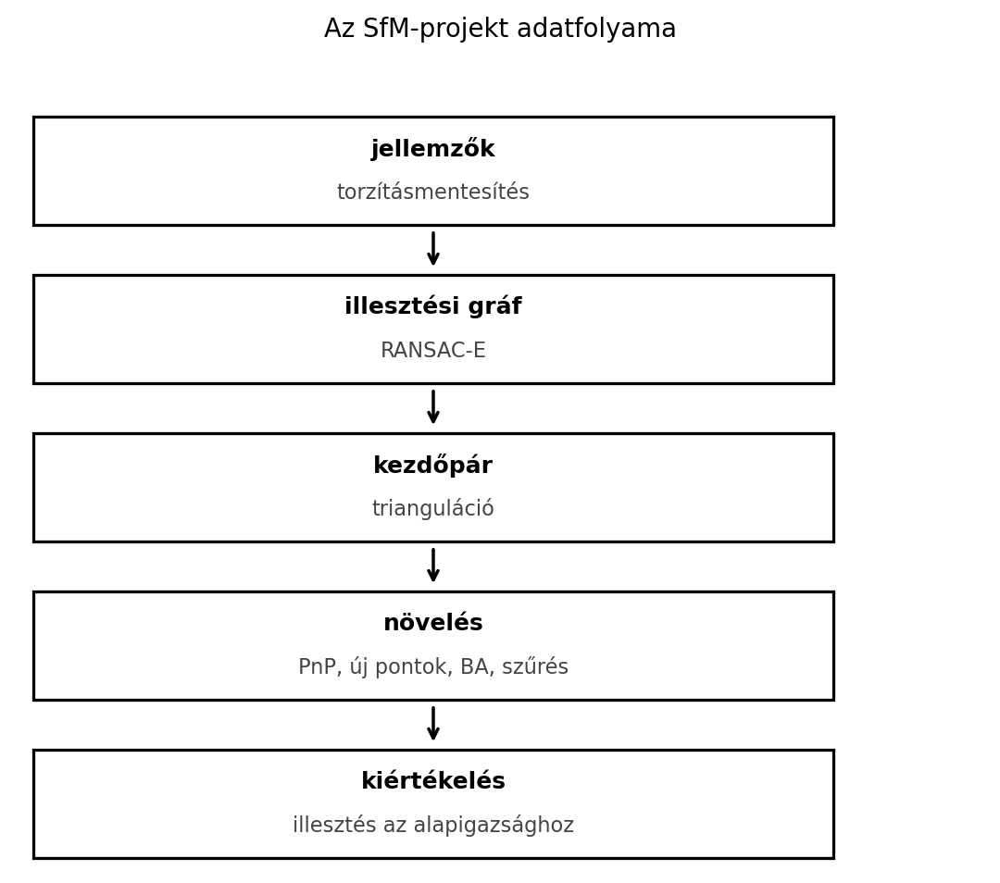
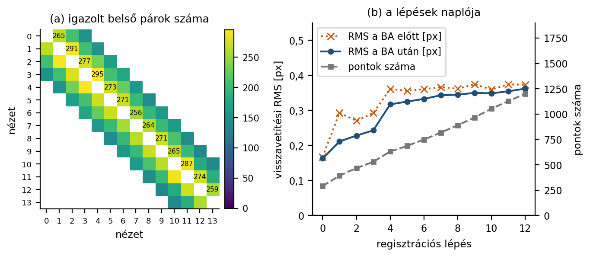
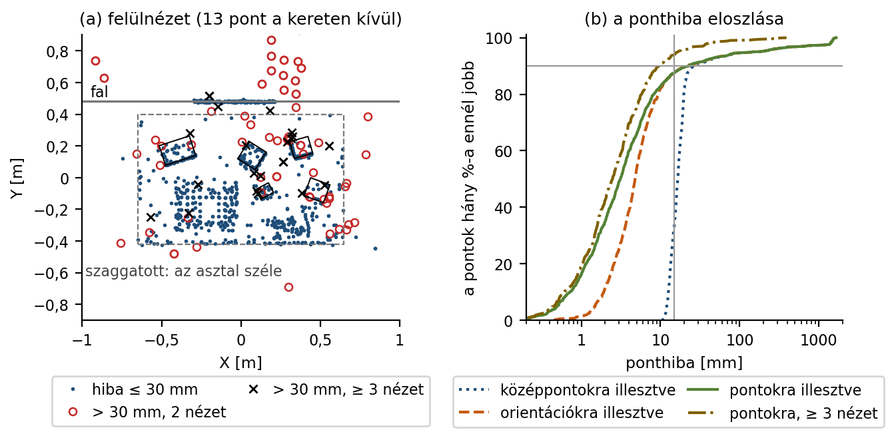
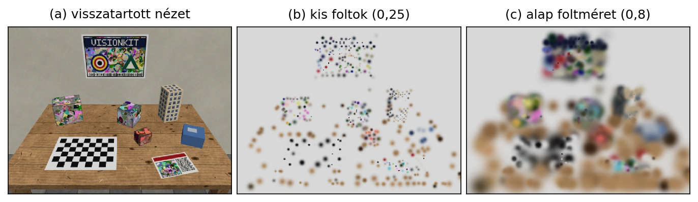

Az előző projektben a kamera pózát egy ismert méretű poszterből számoltuk. Mit tehetünk, ha semmit sem tudunk a jelenetről, csak körbejártuk egy kalibrált kamerával? A struktúra mozgásból (structure from motion, SfM) feladata ekkor egyszerre becsülni a kamerapályát és a látott pontok 3D helyét. Ez a lépés előzi meg a fotogrammetriát, a robotok térképezését, és a legtöbb neurális megjelenítő módszer is innen kapja a kamerapózokat.
A módszert a Struktúra mozgásból (SfM): az inkrementális folyamat és a Nyalábkiegyenlítés alfejezetben építettük fel. Itt projektként futtatjuk végig: saját képsorozatot készítünk a futó jelenetről, a Záróprojekt I: kalibrált kamera és síkbeli kiterjesztett valóság kalibrációját használjuk, előre rögzített feltételek szerint értékelünk, megkeressük, miért bukik el az első változat az egyik feltételen, és a kapott pontfelhőt kitekintésként egy új nézetből meg is jelenítjük.
Bemenet: 14 darab
-as
színes kép a
-os
pályáról (ar.sfm_poses), a torzító kamerával és
szórású zajjal, valamint a Záróprojekt I: kalibrált
kamera és síkbeli kiterjesztett valóság alfejezetben becsült
és torzítás. A kamerapózok és a jelenet geometriája ismeretlen. Egy 15.,
a pályán két nézet között és kissé magasabban készült képet
félreteszünk: a rekonstrukció nem látja.
Kimenet: nézetenként kamerapóz (egy tetszőleges, de közös koordinátarendszerben), ritka pontfelhő színekkel, valamint jegyzőkönyv.
Elfogadási feltételek:
| # | Mérőszám | Feltétel |
|---|---|---|
| G1 | regisztrált nézetek | 14 / 14 |
| G2 | visszavetítési RMS | px |
| G3 | kameraközéppontok ATE-je (Umeyama után) | mm |
| G4 | forgatáshiba, medián | |
| G5 | ponthiba (pontokra illesztve), medián | mm |
| G6 | ponthiba, 90. percentilis | mm |
A két képből álló rekonstrukció skálája nem határozható meg, és ugyanez igaz a teljes sorozatra: az eredmény egy hasonlóságig (forgatás, eltolás, skála) egyértelmű. Kiértékelés előtt ezért az alapigazsághoz illesztjük (A síkbeli transzformációk hierarchiája hasonlóságának 3D változata, Umeyama-módszer).

A pontfelhő a pálya bal oldali felén lévő (3, 4) képpárról indul, és mindkét irányba bővül: minden lépés egy újabb kamerát regisztrál, majd a már legalább két regisztrált képen látott nyomvonalakat triangulálja. A fekete élek a valódi dobozok; a kék pontok ezek felületén sűrűsödnek.
Minden képen DoG-kulcspontokat és SIFT-típusú leírókat számítunk (Skálainvariáns detektálás: LoG, DoG és a SIFT elve); a leírót egy bájtra kvantáljuk, a pont színét a képből olvassuk ki. A pixelkoordinátákat a Záróprojekt I: kalibrált kamera és síkbeli kiterjesztett valóság kalibrációjával torzításmentesítjük (Lencsetorzítás); képet nem mintavételezünk újra.
import sys; sys.path.insert(0, "code")
import numpy as np
from visionkit import camera, pose, sfm
from visionkit.projects import ar_sfm as ar
cal = ar.calibrate_camera(ar.ar_data()["calib"]["corners"])
K, dist = cal["K"], cal["dist"]
data = ar.sfm_data() # jellemzők (figures/data/cv069_data.npz)
print("jellemzők nézetenként:", [len(u) for u in data["uv"]])
feats = ar.sfm_features(data, K, dist)
graph = sfm.match_graph(feats, K, pairs=[(3, 4), (3, 6), (0, 3)], seed=0)
for (i, j), e in graph.items():
print(f"({i:2d}, {j:2d}): {e['n_matches']:3d} pár, {e['n_inliers']:3d} belső, "
f"homográfia-arány {e['h_ratio']:.2f}, medián szög {e['angle']:.1f}°")jellemzők nézetenként: [612, 599, 638, 614, 602, 614, 573, 568, 610, 590, 606, 648, 594, 596]
( 3, 4): 345 pár, 295 belső, homográfia-arány 0.50, medián szög 5.1°
( 3, 6): 204 pár, 176 belső, homográfia-arány 0.50, medián szög 14.3°
( 0, 3): 180 pár, 150 belső, homográfia-arány 0.43, medián szög 15.4°Az illesztési gráf csúcsai a képek, élei a geometriailag igazolt párok. Minden élen a legközelebbi szomszéd illesztés (arányteszt, kölcsönösség) után az 5 pontos RANSAC- fut (Esszenciális mátrix, 5-pontos algoritmus és a póz kinyerése). Három szám dönt az él hasznosságáról: a belső párok száma, a homográfiával is magyarázható hányad (tiszta síkra vagy tiszta forgatásra utal) és a háromszögelési szög. A távolabbi képpárok szöge nagyobb, de kevesebb a közös, jól illeszthető pontjuk. A teljes gráfot a ablakkal építjük: egy körbejáró sorozatnál a távoli képek alig fednek át, és a páronkénti RANSAC a legdrágább lépés.

Az (a) ábra sávos: a szomszédos képek 250–300 belső párt adnak, a harmadik szomszéd már csak kb. 135–180-at. A (b) a napló: a BA minden lépés után visszanyomja az új pontok és az új kamera okozta hibát.
Ismétlődő mintázatnál (sakktábla, ablakrács, csempe) a leíró nem tudja megkülönböztetni a szomszédos elemeket. Nézzük meg egyszerűsített, rektifikált geometriában, mi lesz egy elcsúszott párból (Sztereó rektifikálás és diszparitás). Legyen px, a két szomszédos kamera távolsága m (a -os lépés 1,3 m-en), a pont valódi mélysége m.
A hamis pont fél méterrel hátrébb kerül, mégis tökéletesen teljesíti az epipoláris kényszert, és két nézetre nulla a visszavetítési hibája. Egy harmadik, távolságú kép csak akkor erősítené meg, ha ott pontosan két periódussal csúszna el az illesztés ( px); ennek jóval kisebb az esélye. A két nézetre épülő pontok a legveszélyesebbek.
f, b, Z, a = 500.0, 0.147, 1.3, 0.04
d = f * b / Z
d_false = d - f * a / Z
print(f"d = {d:.1f} px, periódus a képen {f * a / Z:.1f} px")
print(f"hamis d' = {d_false:.1f} px, Z' = {f * b / d_false:.2f} m, "
f"a 3. képen elvárt d'_2 = {2 * d_false:.1f} px")d = 56.5 px, periódus a képen 15.4 px
hamis d' = 41.2 px, Z' = 1.79 m, a 3. képen elvárt d'_2 = 82.3 pxA teljes lánc egyetlen hívás: sfm.incremental felépíti a
nyomvonalakat, kezdőpárt választ (sok belső pont, elég nagy szög, kevés
homográfia-dominancia), majd ismétli a PnP-regisztrációt, a
triangulálást, a nyalábkiegyenlítést és a szűrést. Először egy kis, öt
képes részfeladaton futtatjuk, hogy a napló olvasható legyen:
sub = ar.sfm_features(data, K, dist, views=[4, 5, 6, 7, 8])
small = sfm.incremental(sub, K, seed=0)
print("sorrend:", small.order)
for h in small.history:
print(f"lépés {h['step']}: PnP/kezdő belső {h['n_inliers']:3d}, új pont {h['n_new']:3d}, "
f"összes {h['n_points']:3d}, RMS {h['rms_before']:.3f} -> {h['rms']:.3f} px")sorrend: [0, 1, 2, 3, 4]
lépés 0: PnP/kezdő belső 273, új pont 276, összes 276, RMS 0.118 -> 0.118 px
lépés 1: PnP/kezdő belső 197, új pont 119, összes 395, RMS 0.216 -> 0.157 px
lépés 2: PnP/kezdő belső 223, új pont 81, összes 476, RMS 0.268 -> 0.209 px
lépés 3: PnP/kezdő belső 235, új pont 75, összes 551, RMS 0.304 -> 0.251 pxA sorszámok itt a részlistán belüli indexek (a 0. a 4. képet jelöli).
A 14 képes futás terhelt gépen fél–egy percig tart, ezért az eredményt
az ar.sfm_runs() gyorsítótárából töltjük be; ugyanaz a kód
állította elő (ar.reconstruct(data, K, dist)), a
gyorsítótár törlése helyett új útvonal megadásával újraszámolható. A
teljes futás kezdőpárja a (3, 4), a regisztráció sorrendje 3, 4, 2, 5,
6, 1, 0, 7, …, 13.
Hibakeresés, ha nem működik. (1) Nézd meg az illesztési gráfot: van-e összefüggő lánc, és nem homográfia-dominált-e a kezdőpár? (2) Rajzold fel a kezdőpár háromszögelt pontjait: a mélységek pozitívak-e, és a felhő alakja hihető-e? (3) Figyeld a lépésnaplót: ha egy regisztrációnál az RMS ugrik, vagy a PnP belső aránya kicsi, az a nézet gyanús. (4) A maradékok hisztogramja és nézetenkénti átlaga megmutatja a rossz -t vagy a torzítás elhanyagolását.
runs = ar.sfm_runs()
full = runs["full"]
ev = ar.evaluate_run(full)
checks = [("G1 regisztrált nézetek", ev["n_views"], 14, ">="),
("G2 visszavetítési RMS [px]", ev["rms_px"], 0.5, "<="),
("G3 ATE [mm]", ev["ate_mm"], 5.0, "<="),
("G4 forgatáshiba, medián [fok]", np.median(ev["rot_deg"]), 0.2, "<="),
("G5 ponthiba, medián [mm]", ev["shape_mm"], 5.0, "<="),
("G6 ponthiba, 90% [mm]", ev["shape_p90_mm"], 15.0, "<=")]
for label, value, limit, rel in checks:
ok = value >= limit if rel == ">=" else value <= limit
print(f"{label:32s} {value:8.3f} határ {limit:5.1f} "
f"{'teljesül' if ok else 'NEM teljesül'}")
print(f"{ev['n_points']} pont, {ev['n_obs']} megfigyelés")G1 regisztrált nézetek 14.000 határ 14.0 teljesül
G2 visszavetítési RMS [px] 0.362 határ 0.5 teljesül
G3 ATE [mm] 2.368 határ 5.0 teljesül
G4 forgatáshiba, medián [fok] 0.076 határ 0.2 teljesül
G5 ponthiba, medián [mm] 3.116 határ 5.0 teljesül
G6 ponthiba, 90% [mm] 22.806 határ 15.0 NEM teljesül
1200 pont, 5203 megfigyelésÖt feltétel bőven teljesül, a hatodik viszont nem: a pontok egytizede 23 mm-nél rosszabb, miközben a medián 3 mm. Mielőtt javítanánk, értsük meg a mérést. A sűrűség felületenként:
from visionkit import scene
for sid in np.unique(ev["surface"]):
m = ev["surface"] == sid
if m.sum() >= 20:
e = ev["errors"]["shape"][m]
name = scene.SURFACE_NAMES[int(sid)]
print(f"{name:12s} {m.sum():4d} pont, medián {np.median(e):7.1f}, "
f"90%: {np.percentile(e, 90):7.1f} mm")table 194 pont, medián 4.0, 90%: 30.4 mm
chessboard 272 pont, medián 3.6, 90%: 1378.1 mm
wall 20 pont, medián 300.0, 90%: 780.4 mm
poster 209 pont, medián 1.8, 90%: 6.5 mm
floor 22 pont, medián 30.5, 90%: 494.1 mm
magazine 72 pont, medián 3.2, 90%: 8.6 mm
table_frame 23 pont, medián 13.3, 90%: 81.0 mm
box_a 74 pont, medián 2.5, 90%: 12.7 mm
box_b 70 pont, medián 3.6, 90%: 10.8 mm
box_c 207 pont, medián 2.1, 90%: 6.6 mm
box_e 24 pont, medián 3.2, 90%: 10.3 mmA gazdag textúrájú felületek (poszter, dobozok, újság) sok és pontos pontot adnak, a sima fal alig néhányat. A sakktábla mediánja jó, a 90. percentilise viszont katasztrofális (1,4 m); a csempés padló még mediánban is rossz. Mindkettő ismétlődő mintázat. A fal 20 „pontja” külön eset:
o = full["rec"].active()
ids, first = np.unique(full["rec"].obs_track[o], return_index=True)
offsets = np.array([(du, dv) for du in range(-4, 5) for dv in range(-4, 5)])
wall = np.flatnonzero(ev["surface"] == scene.SURFACE_IDS["wall"])
mixed = 0
for k in wall:
j = o[first[k]]
v = int(full["rec"].obs_view[j])
uv = full["rec"].obs_uv[j][None]
raw = camera.normalized_to_pixel(camera.pixel_to_normalized(uv, K), K, dist)
hit = scene.cast_rays(raw + offsets, *ar.sfm_poses()[v], dist=ar.DIST_TRUE)
mixed += bool(set(hit["ids"].tolist()) - {scene.SURFACE_IDS["wall"]})
print(f"{mixed} falpontnál (a {len(wall)}-ból) más felület is látszik 4 pixelen belül")10 falpontnál (a 20-ból) más felület is látszik 4 pixelen belülA pontok felénél a jellemző egy doboz vagy az asztal körvonalán ül, a fal előtt. Az ilyen sziluettpont nézetenként más 3D helyhez tartozik, és az alapigazság sugara a pixelen át a falig mehet: itt a rekonstrukció és a mérés is bizonytalan.

for n_min in (2, 3, 4):
f_ = ar.filter_tracks(ev["errors"]["shape"], ev["length"], n_min)
print(f"legalább {n_min} nézet: {f_['n']:4d} pont, medián {f_['median']:.2f} mm, "
f"90%: {f_['p90']:.2f} mm")
bad = ev["errors"]["shape"] > 30
print(f"30 mm-nél rosszabb: {bad.sum()}, ebből kétnézetes: {(bad & (ev['length'] == 2)).sum()}")legalább 2 nézet: 1200 pont, medián 3.12 mm, 90%: 22.81 mm
legalább 3 nézet: 730 pont, medián 2.48 mm, 90%: 9.58 mm
legalább 4 nézet: 537 pont, medián 2.18 mm, 90%: 7.86 mm
30 mm-nél rosszabb: 105, ebből kétnézetes: 82A diagnózis egybevág a kézi példával: a durva hibák nagy része kétnézetes nyomvonal. Ha csak a legalább három nézetben látott pontokat tartjuk meg, a 90. percentilis 10 mm alá esik, és G6 is teljesül; cserébe a pontfelhő ritkább lesz. Ez a pontosság és a sűrűség közötti kompromisszum, a jegyzőkönyvbe mindkét változat és a döntés indoka is bekerül.
A második meglepetés az illesztés módja. Ugyanazt a rekonstrukciót háromféleképpen vethetjük össze az alapigazsággal:
for name, label in (("point", "kameraközéppontokra"), ("orient", "orientációkra"),
("shape", "pontokra")):
print(f"illesztés {label:20s}: ponthiba medián {ev[name + '_mm']:5.2f} mm")
C = np.array([camera.camera_center(*p) for p in ar.sfm_poses()])
sv = np.linalg.svd(C - C.mean(0), compute_uv=False) / np.sqrt(len(C))
print("a valódi középpontok szórása a főtengelyek mentén [m]:", np.round(sv, 3).tolist())
print(f"a két forgatás eltérése: {ev['align_rot_deg']:.2f}°")illesztés kameraközéppontokra : ponthiba medián 16.56 mm
illesztés orientációkra : ponthiba medián 4.77 mm
illesztés pontokra : ponthiba medián 3.12 mm
a valódi középpontok szórása a főtengelyek mentén [m]: [0.486, 0.089, 0.041]
a két forgatás eltérése: 0.72°A kameraközéppontok egy keskeny íven fekszenek: egyik irányban 49 cm, a másik kettőben 9 és 4 cm a szórásuk. A hosszú tengely körüli forgatást a középpontok alig határozzák meg, ezért a középpontokra illesztett hasonlóság kb. -ot „billen”, ami 1,2 m-en bő centiméter. Az ATE ettől még kicsi (2,4 mm), mert a középpontok közel vannak a billentés tengelyéhez. Tanulság: a ponthibát és az ATE-t mindig az illesztés módjával együtt közöld; ha a kamerák orientációja is ismert az alapigazságból, abból a forgatás sokkal jobban meghatározott.
print(f"{'változat':11s} {'nézet':>5s} {'pont':>5s} {'RMS':>5s} {'ATE':>5s} "
f"{'forg.':>6s} {'pont med':>8s} {'90%':>6s}")
for name, run in runs.items():
e = ar.evaluate_run(run)
print(f"{name:11s} {e['n_views']:5d} {e['n_points']:5d} {e['rms_px']:5.3f} "
f"{e['ate_mm']:5.2f} {np.median(e['rot_deg']):6.3f} {e['shape_mm']:8.2f} "
f"{e['shape_p90_mm']:6.1f}")változat nézet pont RMS ATE forg. pont med 90%
full 14 1200 0.362 2.37 0.076 3.12 22.8
true_cal 14 1200 0.362 2.37 0.079 3.11 22.8
no_ba 14 1199 0.726 2.18 0.217 3.88 21.7
no_dist 14 1234 0.503 6.62 0.324 7.43 88.5
f_plus5 14 1217 0.404 6.83 0.775 6.90 37.5
half 7 621 0.296 2.49 0.145 2.50 9.5
window1 14 1329 0.332 4.57 0.152 3.48 20.7
window_all 14 1133 0.370 2.62 0.111 2.97 33.6Mértékegységek: RMS pixelben, ATE és ponthiba mm-ben, forgatás fokban. A sorok tanulságai:
true_cal: a valódi
-val
és torzítással gyakorlatilag ugyanaz az eredmény, tehát a Záróprojekt I: kalibrált kamera és síkbeli
kiterjesztett valóság kalibrációja nem szűk keresztmetszet.no_ba: nyalábkiegyenlítés nélkül a
visszavetítési RMS és a forgatáshiba is kb. kétszeres, illetve
háromszoros. Az ATE ezt alig mutatja: egyetlen mérőszám
félrevezethet.no_dist és
f_plus5: a modellhiba megjelenik az
ATE-ben, a forgatásban és a ponthibában. Figyeld meg, hogy 5%-os
fókuszhibánál a visszavetítési RMS csak 0,36-ról 0,40 px-re nő: a
kis visszavetítési hiba nem bizonyítja a helyes
geometriát.half: feleannyi képből kb. feleannyi
pont és kétszeres forgatáshiba; a durva hibák aránya viszont kisebb (a
621 pontból 29 rosszabb 30 mm-nél, szemben az 1200-ból 105-tel),
valószínűleg mert nagyobb alapvonalnál az ismétlődő mintán elcsúszott
párok gyakrabban buknak el a geometriai vizsgálaton.window1: csak szomszédos párokkal
rövidebbek a nyomvonalak (átlag 3,7 a 4,3 helyett), és az ATE közel
kétszeres: a pálya „sodródik”.window_all: 91 pár vizsgálata 36
helyett ennél a rövid ívnél nem hoz javulást, a távoli párok néhány
további hamis egyezést is behoznak.A félretett képet utólag regisztráljuk: a leíróit a rekonstruált pontok leíróihoz illesztjük, majd RANSAC-PnP (PnP: kamerapóz ismert 3D pontokból). Ezután a pontfelhőt ebből a nézetből egyszerű Gauss-foltokként rajzoljuk ki: minden pont pixel szórású foltot kap (az sugár a legközelebbi szomszédok távolságából), és mélység szerint elölről hátra keverünk, ahogy a 3D Gaussian splatting ízelítő kezdőállapotában.
reg = ar.register_view(full, data, data["held"]["uv"], data["held"]["desc"])
s, R, t = ev["align"]["orient"]
aligned = sfm.transform_poses([(reg["R"], reg["t"])], s, R, t)[0]
angle, dc = pose.pose_error(*aligned, *ar.held_out_pose())
print(f"{reg['n_matches']} párosítás, {reg['n_inliers']} belső; pózhiba {angle:.2f}°, "
f"{1000 * dc:.1f} mm")
held = camera.undistort_image(data["held"]["image"], K, dist)
for scale in (0.25, 0.8, 2.0):
img, cover, n = ar.render_cloud(full, data, reg["R"], reg["t"], radius_scale=scale)
q = ar.coverage_psnr(img, cover, held)
print(f"foltméret {scale:4.2f}: fedett {q['share']:.2f}, PSNR {q['psnr']:.1f} dB "
f"(egyszínű kép: {q['psnr_mean']:.1f} dB), {n} pont")305 párosítás, 272 belső; pózhiba 0.08°, 2.2 mm
foltméret 0.25: fedett 0.06, PSNR 19.8 dB (egyszínű kép: 13.3 dB), 730 pont
foltméret 0.80: fedett 0.48, PSNR 13.8 dB (egyszínű kép: 14.2 dB), 730 pont
foltméret 2.00: fedett 0.75, PSNR 14.0 dB (egyszínű kép: 15.1 dB), 730 pont
A félretett nézet pózát 2 mm pontossággal kapjuk vissza. A
megjelenítés viszont a foltméret kompromisszumát mutatja: a kis foltok a
fedett pixeleken pontosak (19,8 dB), de a kép 6%-át fedik; az
alapértéknél a fedettség 48%, a PSNR pedig már az egyszínű alapérték alá
esik, mert az elmosott élek nagy hibát adnak, pedig szemre a jelenet
felismerhető. A foltok mérete, alakja, színe és átlátszósága itt nincs a
képekhez illesztve – pontosan ezt teszi hozzá a
Gaussian splatting tanítása, a Neurális
megjelenítés: NeRF pedig ugyanezekből a pózokból folytonos mezőt
illeszt. Ha a hagyományos jellemzőt a Tanult
jellemzőpontok és illesztés leírójára cseréled, csak a
sfm_features bemenetét kell módosítani; az összevetést
ugyanezzel a táblázattal végezd.
| Pont | Ebben a projektben |
|---|---|
| 1. Cél, feltételek | G1–G6 |
| 2. Adatok, magok | cv069_data.npz, 14 + 1 kép, képzaj 0,01, magok 690–703
és 789 |
| 3. Módszer, paraméterek | arányteszt 0,8; -küszöb 1 px; ablak 3; PnP 4 px, szűrés 2 px; szög |
| 4. Eredmény | feltételenként, illesztési móddal |
| 5. Abláció | BA, torzítás, fókusz, nézetszám, ablak |
| 6. Hibaelemzés | kétnézetes hamis pontok, billenő illesztés |
| 7. Korlátok, teendő | ritka felhő, ismeretlen skála, szintetikus textúrák, sűrű sztereó hiányzik |
Továbbvitt eredmény. A rekonstrukciós jegyzőkönyv (illesztési gráf, lépésnapló, ATE és ponthiba az illesztés módjával, sűrűség, abláció) és kiértékelése a Vegyes vizsgafeladatsor és a saját rekonstrukciós projektjeid sablonja.
A záróprojekt 14 képből, a Záróprojekt I: kalibrált kamera és síkbeli kiterjesztett valóság kalibrációjával inkrementális SfM-et futtat: SIFT-jellemzők, ablakos illesztési gráf, RANSAC-, nyomvonalak, kezdőpár, PnP, trianguláció, nyalábkiegyenlítés. Eredmény: 1200 pont, 0,36 px visszavetítési RMS, 2,4 mm ATE, 0,08° medián forgatáshiba. A 90. percentilises ponthiba csak a kétnézetes nyomvonalak kiszűrése után teljesült (22,8 → 9,6 mm): az ismétlődő mintázatokon a kétnézetes hamis pontok átmennek az epipoláris vizsgálaton. A ponthiba az illesztés módjától függ (16,6 mm középpontokra, 3,1 mm pontokra), ezért mindig a módszerrel együtt kell közölni. A félretett nézet 2 mm-re regisztrálható, a ritka felhő pedig Gauss-foltokkal elmosódva jeleníthető meg. Továbbvitt: a rekonstrukciós jegyzőkönyv és kiértékelés.
Ablak nélkül pár; esetén pár.
Maradék: . Paraméter: , tehát mérete . A pontok kiejtése (Schur-komplementer) után a kamerarendszer (Nyalábkiegyenlítés). A skála szabadsága (egy rögzített kamera mellett) a csillapítás miatt nem okoz szingularitást, és a végén visszaállítható.
rec = full["rec"]
C_true = np.array([camera.camera_center(*p) for p in ar.sfm_poses()])
C_est = np.array([camera.camera_center(*rec.poses[v]) for v in range(14)])
s_pair = np.linalg.norm(C_true[13] - C_true[0]) / np.linalg.norm(C_est[13] - C_est[0])
dm = lambda C: np.linalg.norm(C[:, None] - C[None], axis=2)[np.triu_indices(len(C), 1)]
s_all = np.median(dm(C_true) / dm(C_est))
for label, s_ in (("egy távolság (0-13)", s_pair), ("összes pár mediánja", s_all)):
print(f"{label:20s}: skála {s_:.6f}, eltérés az Umeyama-skálától "
f"{100 * (s_ / ev['s'] - 1):+.2f} %")egy távolság (0-13) : skála 0.120745, eltérés az Umeyama-skálától +0.10 %
összes pár mediánja : skála 0.120625, eltérés az Umeyama-skálától -0.00 %A leghosszabb alapvonal egyetlen mérése is ezrelékes pontosságot ad. Ha csak a két szomszédos kamera távolságát mérnénk, a relatív hiba jellemzően nagyobb lenne, mert ugyanaz az abszolút hiba rövidebb hosszra vetül. Valódi felvételnél a mért távolság hibáját is hozzá kell adni.
Másik irányba: px, m (28 cm-rel előrébb). Két periódussal az eredeti irányba: px, m. A hiba nem szimmetrikus, mert a mélység a diszparitás reciproka.
for shift in (+1, -1, -2):
d_ = d + shift * f * a / Z
print(f"elcsúszás {shift:+d} periódus: d' = {d_:.2f} px, Z' = {f * b / d_:.3f} m")elcsúszás +1 periódus: d' = 71.92 px, Z' = 1.022 m
elcsúszás -1 periódus: d' = 41.15 px, Z' = 1.786 m
elcsúszás -2 periódus: d' = 25.77 px, Z' = 2.852 mo = rec.active()
r2 = np.zeros(len(rec.points))
count = np.bincount(rec.obs_track[o], minlength=len(rec.points))
for v in rec.poses:
sel = o[rec.obs_view[o] == v]
res = camera.project(rec.points[rec.obs_track[sel]], rec.K, *rec.poses[v]) - rec.obs_uv[sel]
np.add.at(r2, rec.obs_track[sel], np.sum(res ** 2, axis=1))
rms_pt = np.sqrt(r2[ev["ids"]] / count[ev["ids"]])
e, L = ev["errors"]["shape"], ev["length"]
bad = e > 30
print(f"medián visszavetítés: rossz pontoknál {np.median(rms_pt[bad]):.3f} px, "
f"a többinél {np.median(rms_pt[~bad]):.3f} px")
both = (rms_pt < 0.3) & (L >= 3)
for label, keep in (("visszavetítés < 0,3 px", rms_pt < 0.3), ("legalább 3 nézet", L >= 3),
("mindkettő", both)):
print(f"{label:22s}: marad {keep.sum():4d}, rossz {bad[keep].sum():3d}, "
f"90%: {np.percentile(e[keep], 90):6.1f} mm")medián visszavetítés: rossz pontoknál 0.498 px, a többinél 0.151 px
visszavetítés < 0,3 px: marad 848, rossz 33, 90%: 8.9 mm
legalább 3 nézet : marad 730, rossz 23, 90%: 9.6 mm
mindkettő : marad 473, rossz 3, 90%: 5.6 mmA visszavetítési hiba hasznos, de nem elégséges jelző: a hamis párok csak a küszöbön belül, jellemzően nagyobb maradékkal illeszkednek, ezért a szűrés sok rossz pontot elkap. Marad azonban több tucat olyan, amelyik valószínűleg éppen az epipoláris egyenes mentén csúszott el. A nyomvonalhossz független bizonyítékot (harmadik nézetet) követel; a kettő együtt a legtisztább, a legritkább felhő árán. A küszöböt itt az alapigazság ismeretében próbáltuk ki; valódi adaton ne erre hangold.
A (0, 13) pár nézőszöge több mint
:
a felületek erősen torzulnak, a leírók alig illeszthetők, sok pont az
egyik képen takarásban van, és a RANSAC belső aránya kicsi. Két nagyon
közeli képnél sok a belső pont, de a háromszögelési szög kicsi, ezért a
mélység bizonytalan, és a
felbontása instabil. Egy lehetséges pontszám:
,
ahol
a medián háromszögelési szög,
kb.
,
a homográfia-arány és
egy megengedett hányad. A belső pontok száma a távoli, a szög-tényező a
túl közeli párt bünteti; a sfm.select_initial_pair hasonló,
küszöbös szabályt használ.